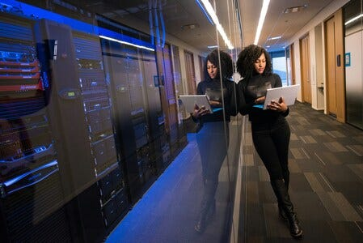
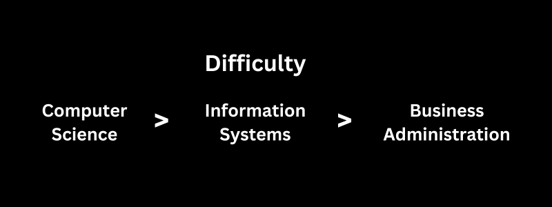

New college students tend to choose their major based on how they view themselves.
It can get pretty simple. Some just want a job, some want clout and others just wanna to appease their parents and pick something easy.
Students make these decisions in estimation of themselves.
If they believe they are smart they choose a "hard" major and if they believe they are less intelligent they try an "easy" major.
"Computer Science and Computer Engineering seem too hard" is the typical statement. They then choose Information Systems.
Truth is, Information Systems is the alternative easier tech major.
Information Systems is usually easier than Computer Science.
Every information systems class I ever took was learning to use technology rather than making technology.
In Computer Science we make software. In Computer Engineering we make hardware. In Information Systems we simply use software and hardware.
Things like managing a server rack, doing administration for an online business, managing a WordPress business and many other jobs are covered by Information Systems.
It is a broad education on using software and hardware in a business setting.
With a systems major you are open for jobs
This is the major appeal of Information Systems, the openness to work anywhere.
For the Information Systems major you are preparing for any job and not a focused field.
For this reason you can afford to have an open mind with this major. You can work anywhere there is technology which is pretty much any job.
You can become a recruiter, marketer with social media, WordPress administrator, executive assistant, endless possibilities.
This is unlike Computer Science where we hyper focus on programming/security or Computer Engineering where its all on the hardware.
Computer Science and engineering majors have a pretty narrow focus.
Me personally I set myself for a hyper focus on Computer Science for the past 7 years.
Within this field I had searched for a job for the past 1.5 years with zero offers.
On LinkedIn I saw my peers getting jobs in non-engineering roles all the time despite they themselves getting a Computer Science degree (they pivoted out).
The difference between me and my peers was my closing of opportunities to only software engineering.
Where as our goal in Information Systems is to perform business with technology.
Why get an Information Systems degree?
The best use case of an Information Systems degree is to introduce someone who knows very little about technology to technology.
For this specific use case I always recommend getting a desktop tower, a good one.

As a new person to computers the combination of systems classes and a desktop can become phenomenal. You get a University course on learning tech and have a desktop to test everything on. With these you can learn how to use a computer really really well in a few years.
It may seems strange for me to advocate for a desktop tower in the middle of this section.
But the usefulness of this major improves dramatically with an actual desktop PC so I had to mention it here.
So, if you are not a techy person but really want to learn how to use computers, then this major is for you.
If you are a techy person then perhaps Computer Science or Computer Engineering. Though it is highly competitive.
If you only want to focus on soft skills and leadership, then purely Business Administration.
Information Systems is not easy
When I started in Information Systems I thought it would be easy. At my university specifically, it was pretty difficult.
For sure Information Systems is more difficult than Business Administration and easier than Computer Science.
What really did it for me, I hadn't had a computer in years. I had just started college without a laptop and knew little about technology at the time.
This major was an introduction to technology for me at 27 years old. Had I been a techy person it likely would have been a lot easier.
It is just business
All businesses use technology in one way or another. In the past there was a focus on soft skills and the art of the deal type operations.
Back then you were essentially a salesman managing hard assets and property.
After the 1980s and the internet we are required to have an online presence and automation.
Because of this, I have no idea why we still have pure Business Administration majors.
Business administration was my first major. I had 2 speech classes, soft skills courses and professionalism classes.
We simulated a business through a video game where we were required to meet in teams.
These business meetings were meant to teach us how to conduct ourselves. Business Administration was a very narrow focus on soft skills, finance, business concepts, social media usage and software applications.
It was so cheesy I just cringed at it.
I didn't feel like I was really learning business. I was more learning how to be a good employee, which I guess is good too.
For a bachelors degree I guess its okay. You need to know this stuff.
But its more of a general education for sure.
Information systems had these classes but replaced half the soft skills classes with software classes.
Toward the end of my undergrad I switched to Information Systems and thoroughly felt everything was more relevant to the modern world.
We were taught SQL, Cloud administration with Google Cloud, Python scripting, basic programming, Tableau, Linux, things that are actually used.
Information systems is basically technology and business while business administration is soft skills and business.
Information Systems is a modern version of business administration. I can see a Masters in Information Systems being more useful than an MBA.
That is just my view, but I at the present I am a purely techy person. Not the public speaking type and not the salesman.
How to be successful during an Information Systems degree
A degree doesn't hold much weight nowadays, even in Information Systems.
You need soft skills and proof of concept for you tech abilities.
Let's see what you can do for these while you study.
Practice facilitation and public speaking
Being this major is an open field you need to train your soft skills. How you might ask?
How in the world does a person train their ability to communicate?
The answer is solving social-based problems.
There are two ways I recommend this be done, #1 free/paid leadership #2 religious leadership.
#1 means volunteering or paying for a club or organization where you have to lead.
#2 is joining a church or religious group and practicing group leadership in your religion.
Both of these train soft skills by solving social problems.
Examples of social problems are things like:
- Complete a Bible study
- Lead a meeting in ABC organization
- Complete a presentation
- Teach a class
- Introduce a person to your religion
- Etc. etc.
These are problems and you are problem solving by using soft skills.
Certifications are your friend
In Computer Science there is a funny phenomenon. The right certifications are worth more than the degree.
Stuff like an AWS certification, Security+ certification, Kubernetes certification are worth a lot.
In Information Systems it is no different. In between your classes Security+ would be a fantastic addition to your degree.
These are hard requirements for many jobs; a bachelors degree in tech and Security+.
In my present time, 2024 I have seen a lot of people get jobs on just that(non-engineering).
Interview while in college
During your university time applying for jobs, interviewing and getting certificates are essential.
I made this huge mistake in college where I had not interviewed during my studies.
When I had graduated I started interviewing for the first time and thoroughly sucked.
By practicing when you don't need a job, you can condition yourself to like interviewing.
You can learn what is required for jobs, then fulfill those requirements in personal study.
With intentional practice over months of interviewing you can get so good at it, it is like flexing.
A year and a half later, my interviewing skills are way better and I actually enjoy interviews. Had I done this in college it would have been much less nerve wrecking as I would not have needed the jobs so much while in school.
Life or death interviews are not fun. Having school on the side makes the interview less important AKA easier to do.
Anywho, I hope you learned something...
CTA: Check out my book on learning code
Happy coding!
Resources
The fundamentals of coding: Why Coding Fundamentals Are Important
Do I need a college degree?: Do I Need a College Degree To Become an Awesome Programmer?